Creación de una marca de licor inspirada en la riqueza cromática del Valle del Elqui.
A partir de los colores y formaciones minerales de sus cerros, se desarrolla una identidad visual que conecta el paisaje con el origen del producto, aplicada a botellas, packaging y piezas gráficas mediante la técnica de serigrafía.
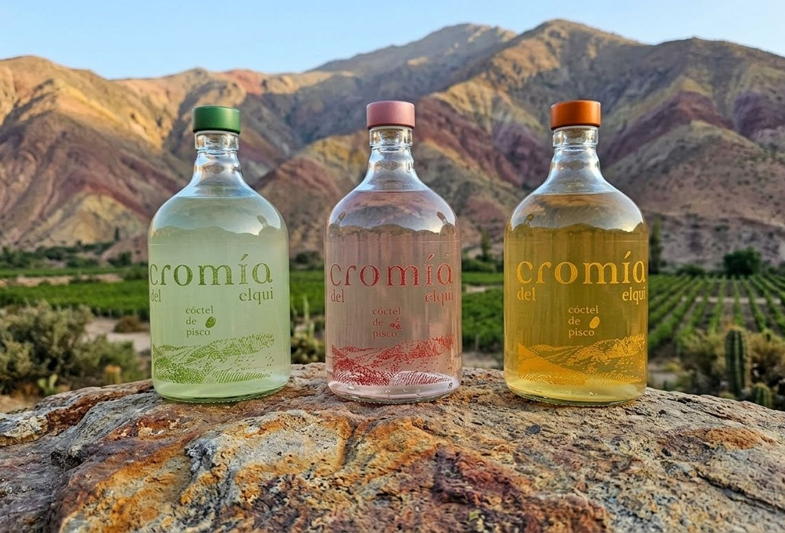
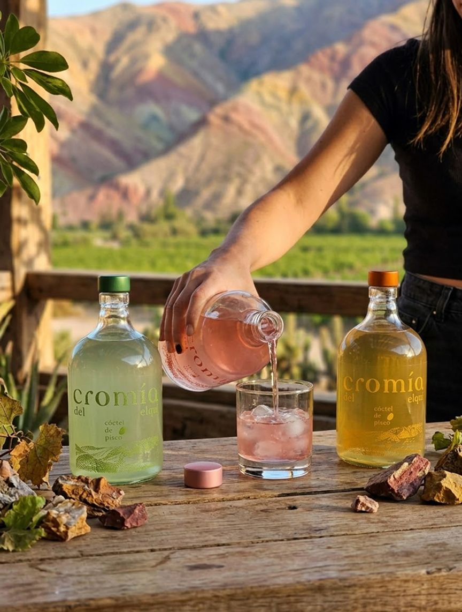
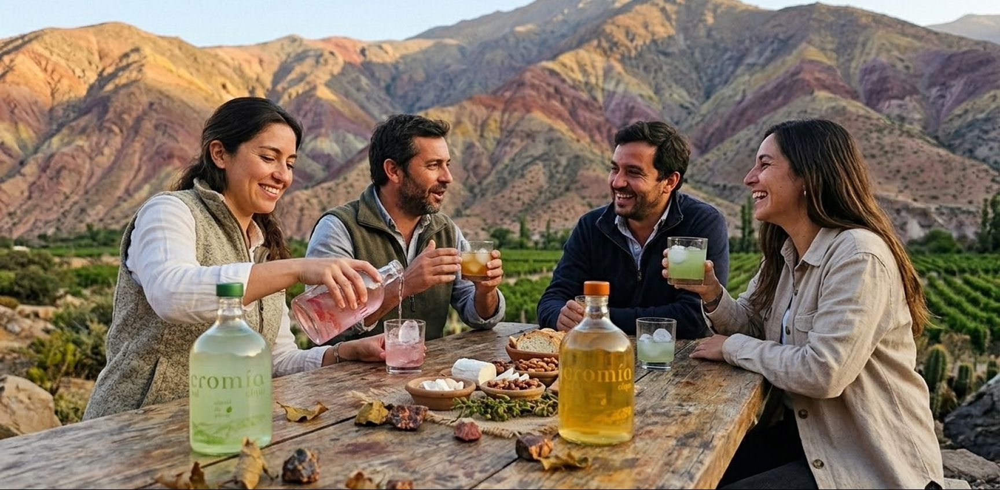
- Créditos:
- Camila Canales Isidora González
- Año - duración:
- 2026 - 2 meses
- Software:
- Adobe Illustrator, Adobe Photoshop
Proceso e ideación
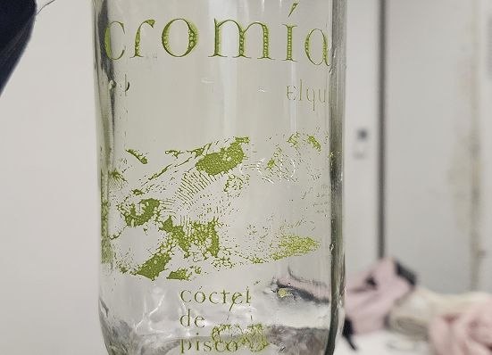
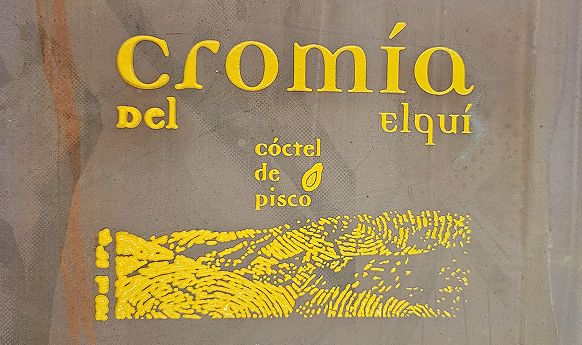
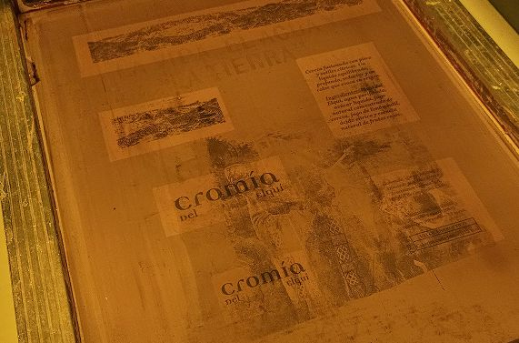
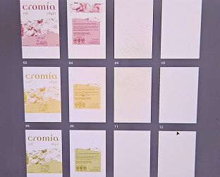
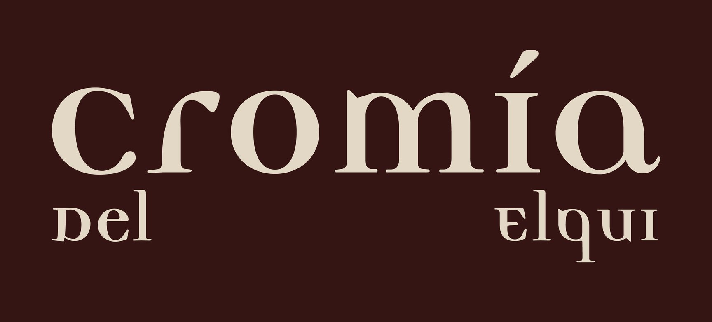
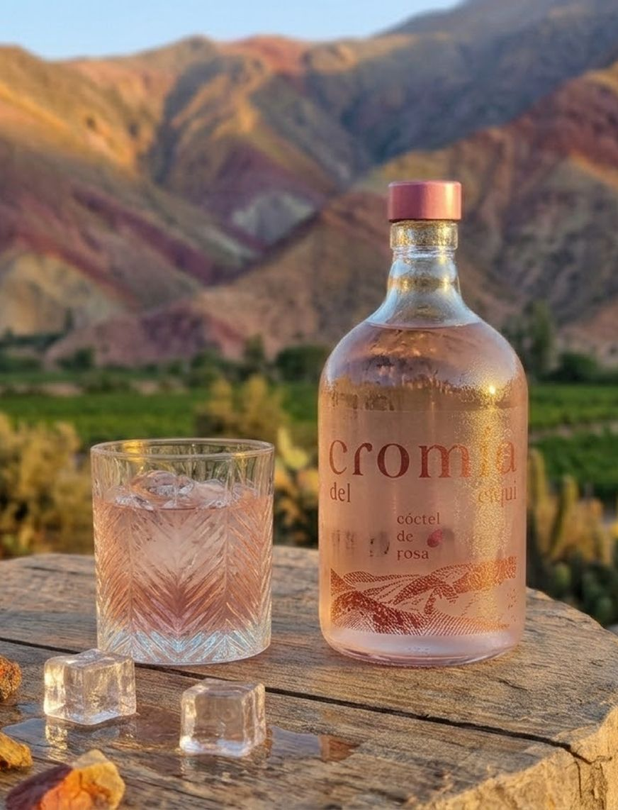
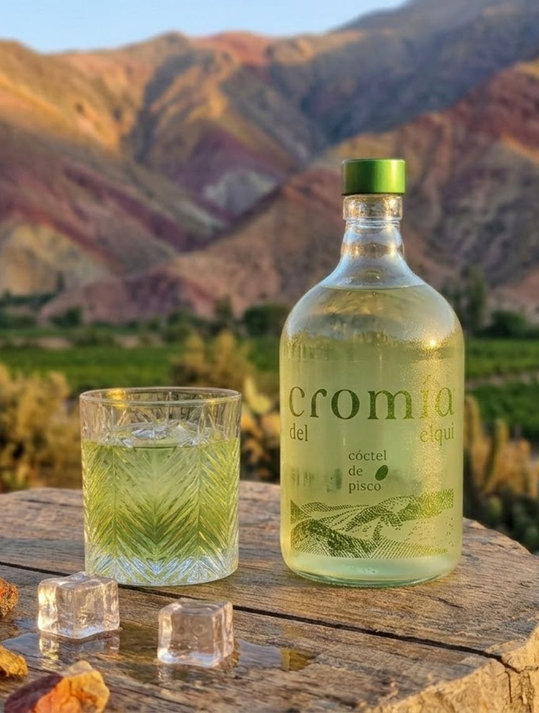
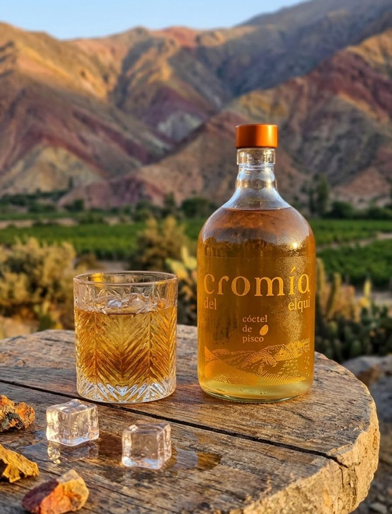